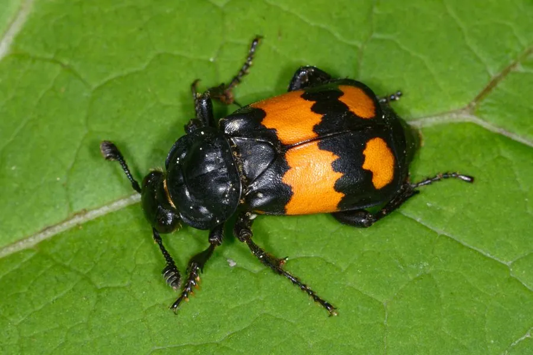

昆虫 · 动物界
埋葬虫 Nicrophorus vespilloides

体色黑橙相间、以动物尸体为食的甲虫，雌雄共同掩埋小型动物尸体并在其上产卵，是自然界重要的“清道夫”。
- 分类
- 门节肢动物门纲昆虫纲目鞘翅目科埋葬虫科属埋葬虫属
- 栖息环境
- 森林、草地和灌丛的松软土壤，以小型动物尸体为食
- 地理分布
- 欧亚大陆的森林和草地，中国北方和山区有分布
- 保护级别
- 暂无评估
物种志
埋葬虫成虫体长 12–18 mm，体色黑色，鞘翅和前胸背板上有醒目的橙红色斑纹，触角末端膨大呈球状，体表多毛。它的体色是一种警戒色，用来警告捕食者。
埋葬虫分布于欧亚大陆的森林和草地。成虫靠嗅觉能在很远处发现刚死的小型动物，如鼠类、鸟类和蛙类，然后雌雄合作把尸体拖到松软的土壤中掩埋，并在尸体上产卵。幼虫孵化后取食尸体，亲虫会守护幼虫，甚至反刍食物喂养它们，这种亲代抚育行为在昆虫中并不常见。埋葬虫能加速尸体分解、减少疾病传播，是重要的生态清洁者，也是法医昆虫学关注的对象。目前它没有IUCN 的正式评估，中国未将其列入国家重点保护野生动物名录。
形态与习性
- 食性以小型动物尸体为食，幼虫也取食尸体
- 体长12–18 mm
- 繁殖雌雄合作把尸体拖入土中掩埋，在尸体上产卵
- 育幼行为亲虫守护幼虫，并反刍食物喂养
- 生态作用加速尸体分解，减少疾病传播
- 栖息地森林、草地和灌丛的松软土壤
趣味知识
- 埋葬虫会把小型动物尸体拖进土里，再在尸体上产卵。
- 雌雄埋葬虫会共同守护幼虫，还会反刍食物喂养它们。
- 它们靠嗅觉在很远处就能发现刚死亡的动物。